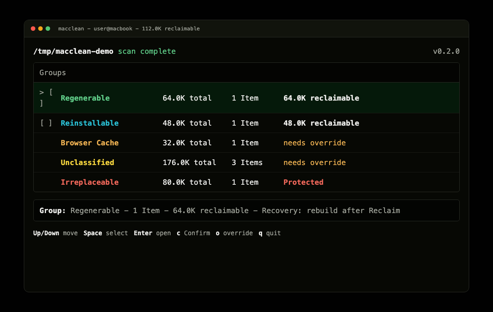

Measure on-disk size
Walk the selected root and report actual allocated bytes, not just apparent file length.
macclean scans your Mac, groups each Item by Safety Class, shows the Evidence behind the label, and waits for an explicit Confirm before anything is Reclaimed.
Warning: macclean Reclaims space by deleting files. It is a personal research project, provided as-is with no warranty, no support, and no liability accepted by the author.

macclean is built around recoverability. It avoids vague labels like junk, keeps the proof next to the action, and makes batch Reclaim pass through the same Confirm gate.
Walk the selected root and report actual allocated bytes, not just apparent file length.
Rules label each Item by recovery cost. Unknown paths fail safe to Unclassified.
Each class keeps concrete Evidence and a Recovery Method close to the Item.
Reclaimable Items are deleted only after Confirm. Protected data is never offered.
Only Regenerable, Reinstallable, Cache, and Redundant Copy are offered for Reclaim by default. Browser Cache and Unclassified require override. Irreplaceable is Protected.
Build output such as Rust `target/`, Flutter `build/`, or Next.js `.next/`.
Recovery: rebuildDependency trees such as `node_modules` that a package manager restores.
Recovery: reinstallTool caches that refill automatically on next use.
Recovery: auto-refillBrowser cache directories. Rebuildable, but clearing them has a real browsing cost.
Override requiredA byte-identical duplicate confirmed by checksum, with the surviving copy preserved.
Recovery: original copyLarge Items the Ruleset cannot prove recoverable. Surfaced for awareness, not auto-offered.
Override requiredDatabases, VM volumes, documents, and other real data that should not be deleted by the tool.
ProtectedThe installer fetches the latest universal macOS binary from GitHub Releases, verifies its SHA-256 checksum, installs to `~/.local/bin`, and updates `~/.zshrc` when needed.
curl -fsSL https://macclean.commaco.tech/install.sh | sh